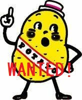

ポテト坊やを探すWebアプリ

category:code:potate_boy_app
機械学習のハッカソンに参加して、何やら一人趣旨をはき違えて作成してしまったアプリです。
→
URL(カルビーさんに一応見せたのでちょっとだけ公式と言えるかも(笑））
※スマホで縦画面で使う前提で作っています。
主な使用ライブラリ：opencv,streamlit
やりたかったこと：ポテトチップスの袋を見分ける画像認識モデル作成の下準備のために、左上のキャラクターの位置を返す
プログラムを書きたい。
→
open-cvのmatchTemplateを利用して実装できそう。
こういう二つの画像を用意してcv2.matchTemplateで処理する。
import cv2
image = cv2.imread("potate_boy.jpg")
template = cv2.imread("potate_boy_face.jpg")
(hight, width, color) = template.shape
result = cv2.matchTemplate(image, template, cv2.TM_CCOEFF_NORMED)
min_val, max_val, min_loc, max_loc = cv2.minMaxLoc(result)
cv2.rectangle(image, max_loc, (max_loc[0] + width, max_loc[1] + hight), 255, 2)
cv2.imshow("test", image)
cv2.waitKey(0)
cv2.destroyAllWindows()
←こういう画像を返してくれます。一致する場所にrectangleを描いた状態です。
result = cv2.matchTemplate(image, template, cv2.TM_CCOEFF_NORMED)
の部分で画像全体の一致度を配列として返してくれており、
min_val, max_val, min_loc, max_loc = cv2.minMaxLoc(result)
を出すことで最も高い一致度（max_val）を示す座標(min_loc, max_loc)を返す。
と、ここまで出来たら後は楽勝かと思ったらそうでもなかった・・・
課題1：サイズの不一致に弱い
templateのサイズが変わると、途端に一致度が極端に下がるのである。このままでは実用性はかなり低い。
→対策：templateのサイズを縮小→拡大していき、最も一致度の高い拡大率で判定する。
import numpy as np
import cv2
def macth_image(image, template): # マッチした位置、スケール、一致度を返す
height = template.shape[0]
width = template.shape[1]
g_image = cv2.cvtColor(image, cv2.COLOR_BGR2GRAY) # グレースケール加工
scale = [0.2, 0.25, 0.3, 0.35, 0.4, 0.45, 0.5, 0.55, 0.6, 0.65, 0.7, 0.75, 0.8, 0.85, 0.9, 0.95, 1, 1.05, 1.1, 1.15,
1.2, 1.25,
1.3, 1.35, 1.4, 1.45, 1.5, 1.55, 1.6, 1.65, 1.7, 1.75, 1.8, 2, 2.3, 2.6, 2.8, 3, 3.2, 3.5]
rank = []#一致度のみを格納するlist
for i in scale: # scaleのパターンだけ縮小→拡大し、最もマッチする値を選ぶ
g_template = cv2.cvtColor(template, cv2.COLOR_BGR2GRAY)
g_template = cv2.resize(g_template, (int(width * i), int(height * i))) # 縮小拡大
result = cv2.matchTemplate(g_image, g_template, cv2.TM_CCOEFF_NORMED)
min_val, max_val, min_loc, max_loc = cv2.minMaxLoc(result)
rank.append(max_val)
best_scale = scale[np.argmax(rank)]
g_template = cv2.cvtColor(template, cv2.COLOR_BGR2GRAY)
g_template = cv2.resize(g_template, (int(width * best_scale), int(height * best_scale))) # 縮小拡大
result = cv2.matchTemplate(g_image, g_template, cv2.TM_CCOEFF_NORMED)
min_val, max_val, min_loc, max_loc = cv2.minMaxLoc(result)
return (min_val, max_val, min_loc, max_loc, g_template, best_scale)
scaleの幅は何となく設定。増やしすぎると時間がかかるため、この辺が実用的というところにおさまった。
また、こういう画像処理はグレースケールで行う方がよいと聞いたのでついでに実装。